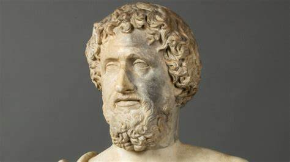

Tales de Mileto fue un filósofo, matemático, geómetra, físico y legislador griego que vivió entre el 624 a.C. y el 546 a.C. en Mileto, una antigua ciudad en la costa de Asia, en lo que hoy es Turquía. Se le considera el fundador de la Escuela de Mileto, a la que pertenecieron otros representantes famosos como Anaxímenes y Anaximandro. Tales es conocido por ser el primer filósofo de la historia y uno de los Siete Sabios de Grecia.
Su filosofía se caracterizó por romper con las explicaciones mitológicas del mundo y dar paso a un pensamiento racional y lógico. Fue el primero en establecer una definición razonada de las manifestaciones del medio ambiente y de la naturaleza, trascendiendo los aspectos tradicionales y culturales de la mitología que caracterizaba a la sociedad griega de su época.
Tales de Mileto es famoso por su afirmación de que “todo es agua”, sugiriendo que el agua es el principio originario de todas las cosas. Esta idea se conoce como “Arjé”. Además, propuso que la Tierra es un disco plano que flota en un océano infinito.
En el campo de las matemáticas, Tales es conocido por sus aportaciones a la geometría. Se le atribuye el primer uso de los teoremas para resolver problemas y se dice que fue el primero en demostrar el teorema que establece que un ángulo inscrito en un semicírculo es un ángulo recto.
A pesar de su importancia y sus contribuciones a la filosofía y las matemáticas, no se conserva ninguna obra escrita de Tales. Todo lo que sabemos de él proviene de lo que otros filósofos y historiadores escribieron sobre él.

Su filosofia
La filosofía de Tales de Mileto se caracterizó por su enfoque racional y lógico, rompiendo con las explicaciones mitológicas del mundo. Tales introdujo la idea de que el universo físico podía ser explicado desde la razón, a pesar del aparente desorden. Investigó sobre el principio único del universo y su naturaleza, y consideraba que la primera causa de todo debía ser material y eterna.
Tales propuso que todas las cosas estaban formadas por agua, considerándola como el principio constitutivo del mundo, conocido como “Arjé”. Esta idea de que todas las sustancias podrían convertirse en otras fue revolucionaria en su tiempo.
Además, Tales consideraba a la Tierra como un disco plano que estaba suspendido sobre un océano infinito cubierto por una semiesfera color celeste que era el cielo. Este pensamiento fue uno de los primeros intentos de explicar el universo desde una perspectiva racional y no mitológica.
En resumen, la filosofía de Tales de Mileto se centró en la búsqueda de una explicación racional y lógica del universo, estableciendo las bases para el desarrollo de la filosofía occidental.
Como impacta nuestra vida
La filosofía de Tales de Mileto sigue teniendo un impacto significativo en el pensamiento contemporáneo. Sus ideas y enfoques han servido de base para numerosas ramas de la filosofía y la ciencia. Su legado perdura como un recordatorio de la importancia de la observación, el razonamiento lógico y la búsqueda constante de conocimiento.
Tales es reconocido como el fundador de la filosofía como saber científico y racional. Sus aportaciones a la física y su rechazo a las narraciones mitológicas para explicar los fenómenos naturales han influido en la forma en que entendemos el mundo. Fue el primero en definir los principios generales del método científico, partiendo de hipótesis para llegar a conclusiones.
Además, su pensamiento ha influido en el desarrollo de la teología al cuestionar la tradición mitológica y establecer el carácter racional de lo divino. Aunque no negó la divinidad de los dioses, introdujo una nueva forma de entender lo divino desde un punto de vista racional.
En resumen, la filosofía de Tales de Mileto ha dejado una huella indeleble en la historia del pensamiento occidental y sigue siendo relevante en la actualidad.